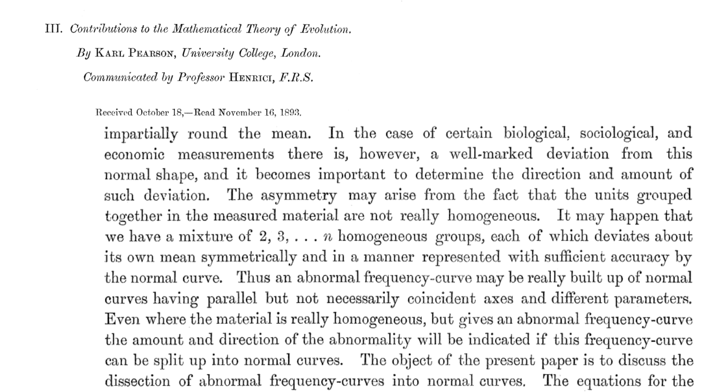
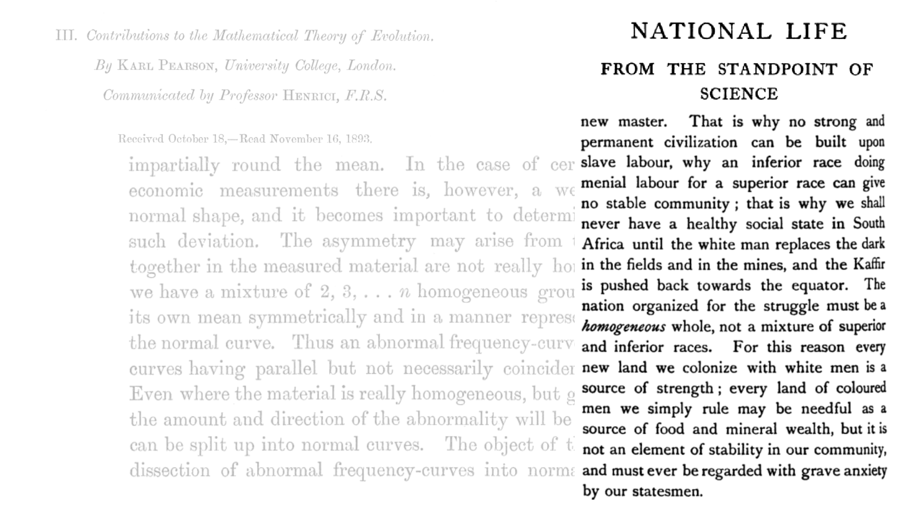

2 Hypotheses and Models
2.1 Hypothesis framing and asking questions
A hypothesis is a statement about the way you think the world works. Often, we learn in intro classes about research methods that a hypothesis should be phrased as an if/then statement. i.e., if this is true, then I expect to see this. In many ways this is true, but it is also an oversimplification and can easily lead people into a trap of making predictions rather than hypotheses. Predictions are what you would expect to observe if your hypothesis were true. For instance, if I were to hold a marker in my hand and let go of it, I think that it would fall to the floor. My hypothesis is not that it would fall to the floor, however, that’s my prediction. My hypothesis must be a statement about the way the universe works. In the case of the falling marker, my hypothesis is likely that there is some mysterious force which draws my marker downwards (i.e., gravity). There are alternative hypotheses that we could consider in this scenario, which could also explain why my marker falls to the ground when I let go of it. Perhaps the floor is magnetic and my marker is metal and drawn the nearest magnet. Perhaps the marker has an engine in one end which propels it in that direction and I happened to release it in just the right way that it was propelled into the floor. Maybe there is a marker monster that lives under the ground and sucks all markers towards it. In all four cases, I would probably predict to observe the same outcome, but would have a different explanation for it. That’s what the hypothesis really is: the explanation for why you think you would observe your predicted outcome. One hypothesis may also have multiple predictions stemming from it.
The way we test our hypotheses is by making predictions that logically follow. If our hypothesis is true, we would predict to observe some outcome. If we then go and collect data and it matches our prediction, we can’t falsify our hypothesis. It doesn’t mean we accept our hypothesis, but we don’t reject it. This notion of falsifiability comes out of a long history of scientific thinking and is what guides a lot of modern statistical thinking. We cannot just ‘accept’ our hypothesis because there are alternative hypotheses that could result in the same predictions. Gravity and the marker-loving-monster dwelling below the surface would both lead to my marker falling. I cannot rule either of those hypotheses out based on predicting that my marker will fall and then observing that it fell. I could still consider those alternative hypotheses as both being likely explanations for what I observed. I would need to go spelunking with marker-loving-monster survey gear to test predictions stemming from my alternative hypothesis, which likely is not a testable hypothesis.
Whenever you come up with a hypothesis, you should consider all the alternatives. This applies not just to the hypothesis itself, but also predictions. What else do you expect to observe if your hypothesis is true?
Note that a scientific hypothesis is very, very different from how a hypothesis is typically treated in statistics. In statistical hypothesis testing, we are often setting up a ‘null’ hypothesis and an alternative hypothesis, but these are not really biological hypotheses. Thankfully, in this course we don’t do any of that nonsense (…for the most part - we do talk about null hypotheses when we’re getting used to probability density and p values). In modeling, we are much more interested in making predictions that stem from our hypotheses and then modeling our data to see how well it matches those predictions. So our hypotheses truly are scientific hypotheses the vast majority of the time.
One of the things that I want to really emphasize in this course is that you should ask the questions, and pose the hypotheses, that you really want to ask and address. Don’t constrain yourself by the statistics, models, or data structures you are familiar with.
2.1.1 In-class exercise: hypotheses and predictions
Generate a hypothesis, predictions stemming from it, represent it as a model, and translate that model between a hypothesis, graph, and equations.
2.2 What is a model
A model is a simplification of the real world. Because our hypotheses are statements about how the world works, we can represent them with models. My absolute favorite podcast (which I highly recommend students in this class check out!) is Quantitude, which is basically like Car Talk but for quantitative methods. The hosts have a great analogy for models, which is model airplanes. When you’re building a model airplane, it should resemble an airplane, you should be able to tell it is an airplane, and it should have some working parts. But if your model of an airplane is so good that when you finish building it you then fly a load of passengers to France, you haven’t built a model airplane, you’ve just built an entire airplane. So you should think of your models as simplifications of the real world, not accurate representations.
There’s a classic quote by George Box (who, incidentally, was married to RA Fisher’s daughter Joan) in which he says that “All models are wrong, but some are useful.” The first part is especially true because we’ve simplified reality and cannot capture all the complexities of the real world in a model (if we did, remember that we built an airplane, not a model of an airplane) so they must be incorrect in some ways. It is also useful to remember that all our models are also right, in many ways.
Models come with a set of assumptions that you make, which are then baked into the model. You should be explicit about what these assumptions are, because they will change how your model behaves.
Models should be parsimonious, meaning they should be as simple as possible while still explaining the phenomenon you are interested in or your explanation for how the world works. They should be no more complex than necessary. To truly represent how the world works, you wouldn’t make a perfect model of the entire world - that already exists. Only include as much complexity in your model as you need to.
2.2.1 Rectilinear pictionary
Why are we playing Rectilinear Pictionary? Because it forces abstraction, breaks difficult concepts down into simplified components, requires physically drawing a model, lets us embrace ambiguity, and gets us all more comfortable being terribly wrong
2.3 A brief history of statistics and eugenics
There are many figures in ecology and evolutionary biology that were giants in their field and helped shape modern science, and who were also extremely problematic individuals (and not just because ‘it was a different time’). Often, the way we learn about these individuals is first through their contributions to the field, and secondarily that they were a ‘bad person’ but that we should still value their intellectual contributions and somehow consider those to be separate from the person. For example, John James Audubon made numerous contributions to ornithology, and also bought and sold enslaved people. You could argue that those are separate aspects of the same person (…you could also argue that he greatly benefited from his status in society as a result of oppressing and enslaving other people and that enabled him to contribute to ornithology, but that is a conversation for a different course…). This is not the case with statistics. Most of modern statistics is built on work done by Sir Francis Galton, Karl Pearson, and Ronald Fisher, all of whom were staunch advocates of eugenics. They also collectively developed the ideas of standard deviation, correlation, regression to the mean, the correlation coefficient, method of moments, \(\chi^2\) test, p-values, principle components analysis, and many other fundamental ideas in statistics. The point is not that these men made exceptional contributions to statistics and also happened to be eugenicists, but rather that they developed statistics to support their eugenicist viewpoints. After all, who could argue with the data they showed to support their view that other races were inferior to white Europeans?

Many of the concepts we still use to this day in statistics come out of this tradition. For example, even the idea that a population (in the statistical sense) can be described from a single distribution is rooted in eugenics. At the same time Pearson was writing about mixtures of ‘homogeneous groups’ from a mathematical perspective, he was also advocating for colonialism and destruction of what he considered to be ‘inferior races’ because a more ‘homogeneous’ society was better.


The specific values, thresholds, cutoffs, and conventions that underlie most of null hypothesis significance testing were developed to support a eugenicist agenda. Always remember that they are not mathematically justified or ordained by some law of nature, but rather prescribed by a handful of like-minded eugenicists over a century ago. You should not feel bad about “breaking” their rules from time to time. Also, statistics is constantly evolving, so there are no hard and fast rules to follow.
2.4 Goal setting
In this course, 10% of your grade is based on a self-assessment of progress towards reaching your own goals. People come into this course from many different backgrounds and with different levels of coding and mathematical proficiency. As such, we shouldn’t all be evaluated in the same way, and meeting our own individual goals is probably the most important thing we can do.
The goal-setting framework I like to use is SMART, which is an acronym that stands for Specific, Measurable, Achievable, Relevant, and Time-bound. When we set a goal for ourselves, it should meet all these criteria.
Specific means it should be something really concrete. In this case, we don’t want to be vague (unlike when thinking about models!). What is the exact thing you’re trying to achieve? “Get better at coding” isn’t exactly specific. Perhaps instead you would like to improve your ability to recall function names that you use routinely and not need to look up the help files for them every time? Or perhaps you want to become much better at generating neat and reproducible scripts? Be as specific as possible.
Measurable means you can actually quantify how much improvement you make. Let’s use the specific example of being able to use some routine functions without looking at help files. Perhaps you want to be able to use at least 50 simple functions without looking up help files. That means those are functions that are part of your new vocabulary as you learn R as a language. What you’re doing with the measurable aspect of your goal is making it possible to quantify progress towards meeting your goal.
Achievable means you think it is actually possible to complete your goal. You want to set ambitious goals for yourself, but you don’t want to make them so lofty that you’re setting yourself up for failure. If you’ve already got quite a bit of coding experience, for example, maybe you actually want to be able to use 200 routine R functions without checking help files. If you’ve never touched R in your life, that’s probably too many, and you should set a more achievable goal. Going back to an example from the first time I taught this course, one person’s achievements during the semester included being able to read in different types of data files and that was a huge accomplishment. What is achievable and ambitious for one person is not always the same for another, and you should set goals only based on your expectations for yourself, not others.
Relevant is kinda just here to fill a spot in the acronym so it doesn’t spell SMAT. Don’t pick stupid goals. It’s up to you what that means. I would probably aim for stuff that’s going to help you in your career, but you could have other goals.
Time-bound is key for knowing if you actually accomplished your goals. If we don’t set deadlines for ourselves, we don’t know if we succeeded. In this course, the time constraint is set for you, because we will be doing a self-assessment of our progress at the end of the course. Your goals are things you want to accomplish this semester. Outside the context of this course, however, you should think about what time frames match the goals you are setting. Keep in mind that you may have some smaller goals which get you closer to reaching a bigger goal down the road.
Assignment: Using the SMART framework, identify 5-10 goals you have for this course. What do you aim to achieve by Week 15? What progress would you like to make? What would success look like to you at the end of this course? These could be related to coding,modeling, mathematics, comfort with equations, data management, computer literacy, research progress, statistical literacy, self-confidence, etc. Be ambitious, but realistic in what you can achieve. Your self-assessment of progress towards reaching your self-determined goals counts for 10% of your grade in this course because I want you to decide what you want to get out of the course and what will be most useful to you in your academic career. Due January 22